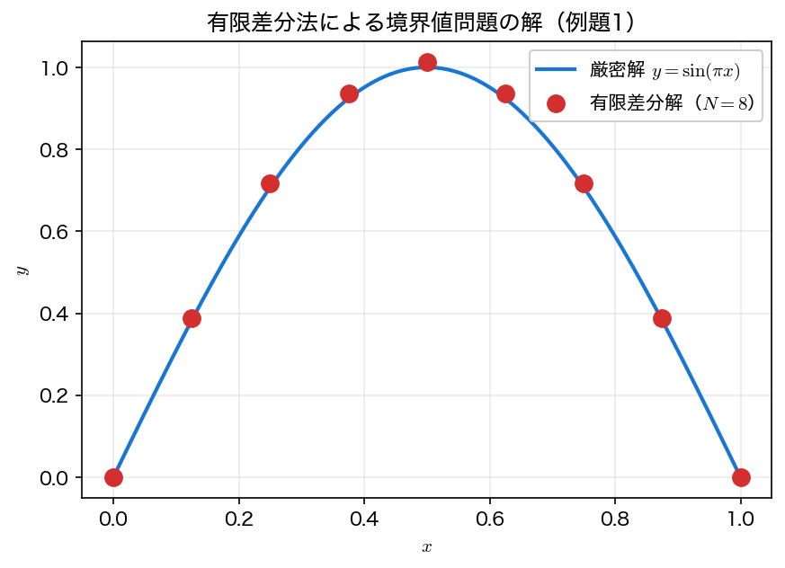
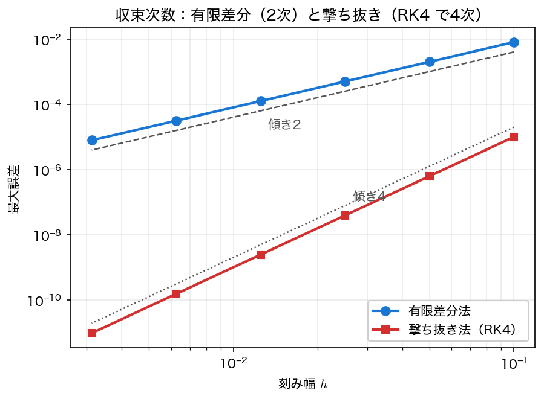

有限差分法
撃ち抜き法は境界値問題を初期値問題に変換して解いた。これに対し有限差分法（finite difference method）は、微分そのものを差分で置き換えて、区間全体の未知数を一度に連立方程式として解く。前ページで予告したとおり、その係数行列は本回を貫く三重対角行列 \(A\) であり、これを解く道具は第3回の直接法——とくに三重対角専用のトーマス法——である。
中心差分で連立方程式にする
区間 \([0,1]\) を \(N\) 等分し、刻み幅 \(h=1/N\)、格子点 \(x_i=ih\)（\(i=0,\dots,N\)）をとる。2階微分を中心差分
で近似する。テイラー展開から、この近似の誤差は \(O(h^2)\) である（2次精度）。境界値問題 \(-y''=f(x)\) の内点 \(i=1,\dots,N-1\) にこれを当てはめると
という \(N-1\) 本の式が並ぶ。ディリクレ境界 \(y_0=\alpha,\ y_N=\beta\) は既知なので、\(i=1\) と \(i=N-1\) の式に現れる \(y_0,y_N\) を右辺へ移す。未知ベクトル \(\mathbf y=(y_1,\dots,y_{N-1})^\top\) について書けば
となる（端の行だけ右辺に \(\alpha/h^2\) または \(\beta/h^2\) が加わる。本ページの例題1は \(\alpha=\beta=0\) なので寄与はない）。\(A\) は対称三重対角——各行に非ゼロが高々3個——という非常に疎な構造を持つ。これを活かすのがトーマス法である。
トーマス法：三重対角専用のガウス消去
第3回の直接法で学んだガウス消去を一般の \(n\times n\) 行列にそのまま使うと \(O(n^3)\) の演算が要る。しかし三重対角行列では、消去で埋まる（fill-in する）成分がないため、計算量を \(O(n)\) まで落とせる。これをトーマス法（Thomas algorithm）——三重対角行列アルゴリズム（tridiagonal matrix algorithm, TDMA）とも呼ぶ。第3回で名前だけ紹介したこの手法を、ここで実装する。
各行を
と書く（\(a_0,c_{n-1}\) は使わない）。トーマス法は2段階からなる。
前進消去——下副対角 \(a_i\) を消して上係数と右辺を更新する：
後退代入——末尾から順に解を確定する：
ループは2本だけ、追加の作業配列も2本（\(c',d'\)）で済む。\(N\) を大きくしても演算量は \(N\) に比例して増えるだけなので、撃ち抜き法のような反復も要らず、境界値問題を1回の直接計算で解ける。
サンプルコード
例題1 \(-y''=\pi^2\sin(\pi x)\), \(y(0)=y(1)=0\)（厳密解 \(\sin\pi x\)）を、トーマス法で解く。内点の各行は \(a_i=-1,\ b_i=2,\ c_i=-1\)、右辺は \(d_i=h^2 f(x_i)=h^2\pi^2\sin(\pi x_i)\) である（両辺に \(h^2\) を掛けて整数係数にした）。後半では \(N\) を倍々にして最大誤差を測り、2次収束を確認する。係数・右辺・解の配列とトーマス法の作業配列 cp・dp は長さが \(N\) で決まるので、malloc で確保する。
#include <stdio.h>
#include <stdlib.h>
#include <math.h>
static const double PI = 3.14159265358979323846;
/* トーマス法（三重対角ガウス消去, O(n)）
a[i] x[i-1] + b[i] x[i] + c[i] x[i+1] = d[i], i=0..n-1
a[0], c[n-1] は使わない。cp, dp は作業配列。 */
void thomas(int n, const double a[], const double b[], const double c[],
const double d[], double x[]) {
double *cp = malloc(n * sizeof(double));
double *dp = malloc(n * sizeof(double));
cp[0] = c[0]/b[0];
dp[0] = d[0]/b[0];
for (int i=1;i<n;i++){ /* 前進消去 */
double m = b[i] - a[i]*cp[i-1];
cp[i] = c[i]/m;
dp[i] = (d[i] - a[i]*dp[i-1])/m;
}
x[n-1] = dp[n-1]; /* 後退代入 */
for (int i=n-2;i>=0;i--) x[i] = dp[i] - cp[i]*x[i+1];
free(cp);
free(dp);
}
/* 例題1: -y'' = pi^2 sin(pi x), y(0)=y(1)=0, 厳密解 y=sin(pi x)。
内点 i=1..N-1 (m=N-1 個) を中心差分で離散化し、最大誤差を返す。 */
double fd_maxerr(int N) {
int m = N-1;
double h = 1.0/N;
double *a = malloc(m * sizeof(double));
double *b = malloc(m * sizeof(double));
double *c = malloc(m * sizeof(double));
double *d = malloc(m * sizeof(double));
double *y = malloc(m * sizeof(double));
for (int i=0;i<m;i++){
double xi = (i+1)*h;
a[i] = -1.0; b[i] = 2.0; c[i] = -1.0; /* (-y_{i-1}+2y_i-y_{i+1}) */
d[i] = h*h*PI*PI*sin(PI*xi); /* = h^2 * f_i */
}
/* 境界 y_0=y_N=0 なので右辺への移項は不要 */
thomas(m, a, b, c, d, y);
double emax = 0.0;
for (int i=0;i<m;i++){
double xi = (i+1)*h;
double e = fabs(y[i] - sin(PI*xi));
if (e>emax) emax = e;
}
free(a); free(b); free(c); free(d); free(y);
return emax;
}
int main(void){
/* 粗いメッシュ N=8 の数値解を厳密解と並べて表示（図と対応） */
int N0 = 8; double h0 = 1.0/N0; int m0 = N0-1;
double *a = malloc(m0 * sizeof(double));
double *b = malloc(m0 * sizeof(double));
double *c = malloc(m0 * sizeof(double));
double *d = malloc(m0 * sizeof(double));
double *y = malloc(m0 * sizeof(double));
for (int i=0;i<m0;i++){
double xi=(i+1)*h0;
a[i]=-1.0; b[i]=2.0; c[i]=-1.0; d[i]=h0*h0*PI*PI*sin(PI*xi);
}
thomas(m0,a,b,c,d,y);
printf("=== 有限差分解（例題1, N=%d）===\n", N0);
printf(" x 数値解 y_i 厳密 sin(pi x) 誤差\n");
printf("------------------------------------------------------------\n");
for (int i=0;i<m0;i++){
double xi=(i+1)*h0, ex=sin(PI*xi);
printf(" %5.3f %14.8f %14.8f %.3e\n", xi, y[i], ex, fabs(y[i]-ex));
}
/* 作図用: 境界 (y=0) も含めて数値解と厳密解を書き出す */
FILE *fp = fopen("fd_solution.dat", "w");
if (fp == NULL) { perror("fd_solution.dat"); return 1; }
fprintf(fp, "# x y_numeric y_exact\n");
for (int i=0;i<=N0;i++){
double xi = i*h0;
double yi = (i==0 || i==N0) ? 0.0 : y[i-1];
fprintf(fp, "%.10e %.10e %.10e\n", xi, yi, sin(PI*xi));
}
fclose(fp);
free(a); free(b); free(c); free(d); free(y);
printf("\n=== メッシュ細分による収束次数（2次精度の確認）===\n");
printf(" N h 最大誤差 誤差比\n");
printf("---------------------------------------------------\n");
int Ns[] = {10,20,40,80,160,320};
double prev=0;
FILE *fc = fopen("fd_convergence.dat", "w"); /* 作図用 */
if (fc == NULL) { perror("fd_convergence.dat"); return 1; }
fprintf(fc, "# N h max_error\n");
for (int k=0;k<6;k++){
double e = fd_maxerr(Ns[k]);
printf(" %5d %7.5f %.6e", Ns[k], 1.0/Ns[k], e);
if (k) printf(" %.3f\n", prev/e); else printf(" --\n");
fprintf(fc, "%d %.10e %.10e\n", Ns[k], 1.0/Ns[k], e);
prev = e;
}
fclose(fc);
printf("\n(2次精度なら誤差比は約 4)\n");
return 0;
}
コンパイル・実行:
実行結果
=== 有限差分解（例題1, N=8）===
x 数値解 y_i 厳密 sin(pi x) 誤差
------------------------------------------------------------
0.125 0.38763947 0.38268343 4.956e-03
0.250 0.71626434 0.70710678 9.158e-03
0.375 0.93584446 0.92387953 1.196e-02
0.500 1.01295075 1.00000000 1.295e-02
0.625 0.93584446 0.92387953 1.196e-02
0.750 0.71626434 0.70710678 9.158e-03
0.875 0.38763947 0.38268343 4.956e-03
=== メッシュ細分による収束次数（2次精度の確認）===
N h 最大誤差 誤差比
---------------------------------------------------
10 0.10000 8.265417e-03 --
20 0.05000 2.058707e-03 4.015
40 0.02500 5.142005e-04 4.004
80 0.01250 1.285204e-04 4.001
160 0.00625 3.212824e-05 4.000
320 0.00313 8.031943e-06 4.000
(2次精度なら誤差比は約 4)
粗い \(N=8\) でも数値解は厳密解 \(\sin\pi x\) の形をよく捉えており（最大でも \(1.3\times10^{-2}\) のずれ）、解は中央 \(x=0.5\) について左右対称——格子と境界条件の対称性が解にそのまま現れている。

刻み幅 \(h\) を半分にするたびに最大誤差は約 \(1/4\) になる（誤差比が \(4.015\to4.004\to4.001\to4.000\) と \(4\) に収束）。これは中心差分の打ち切り誤差 \(O(h^2)\) がそのまま解の誤差に現れた2次収束の証拠である。
打ち切り誤差が「そのまま」現れるのは自明ではない
誤差 \(e=y-y_h\) は \(A_h e = \tau_h\)（\(\tau_h\) は打ち切り誤差、\(A_h\) は係数行列）を満たすので、\(\|e\|\le\|A_h^{-1}\|\,\|\tau_h\|\) である。\(\|\tau_h\|=O(h^2)\) だけでは足りず、\(h\to0\) で \(\|A_h^{-1}\|\) が有界にとどまること（安定性）が要る。本問の \(A_h=\operatorname{tridiag}(-1,2,-1)/h^2\) は最小固有値が \(\frac{4}{h^2}\sin^2\frac{\pi h}{2}\) で、\(h\to0\) で \(\pi^2\) へ単調に増加する。したがって \(\|A_h^{-1}\|_2\) は \(h\) をいくら小さくしても有界にとどまり、打ち切り誤差の次数がそのまま大域誤差の次数になる。「打ち切り誤差の次数＝収束次数」は整合性＋安定性が揃ってはじめて言えることで、この対応は第9回で改めて定式化する。

撃ち抜き法と有限差分法の使い分けは、図のとおり精度と頑健さのトレードオフである。撃ち抜き法は高次の積分器をそのまま使えて精度が高い反面、不安定な方程式では初期傾きの誤差が指数増幅して破綻しうる。有限差分法は精度こそ離散化の次数（ここでは2次）で頭打ちだが、区間全体を一度に解くため初期傾きの増幅という不安定性とは無縁で、長い区間でも頑健である。
可視化
fd.c は2つのファイルを書き出す。fd_solution.dat は \(N=8\) の数値解（境界の \(y=0\) も含めた9点、1列目 \(x\)、2列目 数値解、3列目 厳密解）、fd_convergence.dat は細分の結果（1列目 \(N\)、2列目 \(h\)、3列目 最大誤差）である。上の2枚の図に対応する2パネルを描く。
import numpy as np
import matplotlib.pyplot as plt
x, y_num, y_exact = np.loadtxt("fd_solution.dat", unpack=True)
N, h, err = np.loadtxt("fd_convergence.dat", unpack=True)
fig, (ax1, ax2) = plt.subplots(1, 2, figsize=(11, 4.2))
ax1.plot(x, y_exact, "-", lw=1.5, label="exact $\\sin(\\pi x)$")
ax1.plot(x, y_num, "o", ms=7, label="finite difference ($N = 8$)")
ax1.vlines(x, y_num, y_exact, color="gray", lw=1) # 各格子点での差
ax1.set_xlabel("$x$")
ax1.set_ylabel("$y$")
ax1.set_title("solution on a coarse mesh")
ax1.grid(alpha=0.3)
ax1.legend()
slope = np.polyfit(np.log(h), np.log(err), 1)[0]
ax2.loglog(h, err, "o-", ms=5, label=f"max error (slope {slope:.2f})")
ax2.loglog(h, err[0] * (h / h[0]) ** 2, "k:", lw=1, label="slope 2")
ax2.set_xlabel("step size $h$")
ax2.set_ylabel("max error")
ax2.set_title("second-order convergence")
ax2.grid(alpha=0.3, which="both")
ax2.legend()
fig.tight_layout()
fig.savefig("fd.png", dpi=150)
plt.show()
実行:
左の灰色の縦線が格子点ごとの誤差で、中央で最大・両端で最小という分布が一目で分かる。右は傾きを最小二乗で測ったもので、\(2.00\) になる（本文の収束の図では、ここに撃ち抜き法の傾き4の線も重ねてある）。
非線形境界値問題への拡張
右辺が \(-y''=f(x,y)\) のように未知関数 \(y\) を含む非線形問題では、離散化した連立方程式
が \(\mathbf y\) について非線形になる。これは補足の多変数ニュートン法の出番である。各反復でヤコビアン \(J=\partial\mathbf F/\partial\mathbf y\) を組み、線形系 \(J\,\Delta\mathbf y=-\mathbf F\) を解く。ここで \(A\) は三重対角、\(\mathbf f(\mathbf y)\) の各成分 \(f_i\) は \(y_i\) のみに依存するので \(\partial f_i/\partial y_j\) は対角——したがって\(J\) もまた三重対角になり、各ニュートン反復の線形系をふたたびトーマス法で \(O(n)\) で解ける。第3回（直接法）・補足（多変数ニュートン法）・本回（有限差分）の道具がそのまま組み合わさる。
まとめ
- 有限差分法は中心差分 \(y''(x_i)\approx(y_{i-1}-2y_i+y_{i+1})/h^2\) で境界値問題を三重対角線形系 \(A\mathbf y=\mathbf f\) に離散化する。境界値は右辺へ移項する。
- 三重対角系はトーマス法（前進消去＋後退代入）で \(O(n)\) で解ける。第3回のガウス消去を疎構造に特化させたものである。
- 中心差分は2次精度なので、\(h\) 半減で誤差が \(1/4\) になる2次収束を示す（例題1で誤差比→4）。
- 撃ち抜き法と違い反復なしの直接解で、不安定な方程式にも頑健。精度は離散化の次数で決まる。
- 非線形境界値問題は離散系が非線形になり、補足の多変数ニュートン法でヤコビアン（やはり三重対角）を解く。